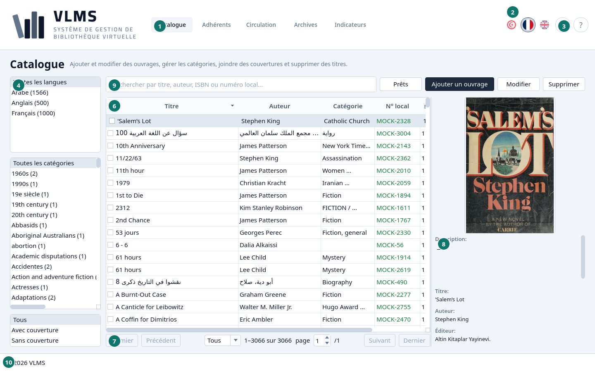
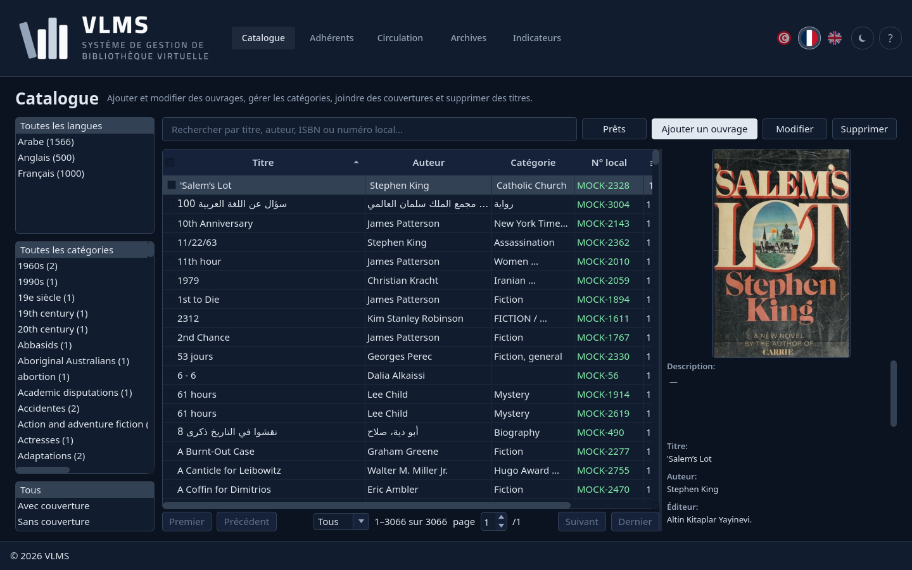
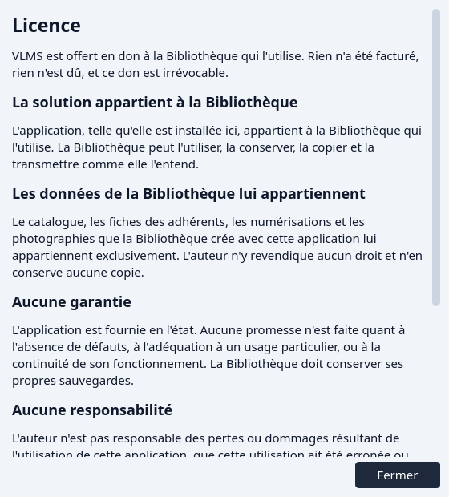
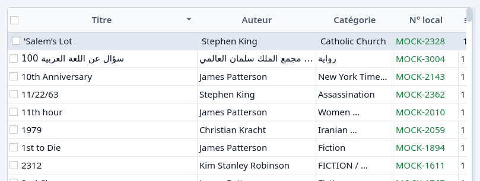

Prise en main
La fenêtre, les listes, le tri et les cases.
Ouvrez VLMS. La fenêtre s'ouvre sur le Catalogue, dans la langue et le thème clair ou sombre que vous aviez laissés.


- Catalogue — l'écran affiché. Adhérents, Circulation, Archives et Indicateurs sont à côté.
- Les trois drapeaux. Le drapeau rempli est la langue de l'écran. Un autre drapeau change toute l'application d'un coup.
- Le bouton de thème, et le ? à côté. Le bouton de thème allume ou éteint le thème sombre. Le ? ouvre ce manuel.
- Les filtres de cet écran.
- La recherche.
- La liste.
- La pagination.
- Le détail de la ligne surlignée.
- Les boutons de cet écran.
- Le pied de page. Le nom de la bibliothèque est un lien.


Le pied de page et la licence
La ligne du pied de page ouvre la licence. Elle dit que l'application est un don à cette bibliothèque, que la bibliothèque possède l'application telle qu'elle est installée ici, et que le catalogue, les fiches d'adhérents et les photographies appartiennent à la bibliothèque. Il n'y a pas de garantie.


Fermez-la avec Fermer.
La forme de chaque liste
Le Catalogue, les Adhérents, la Circulation et les Archives ont la même forme.
- La colonne de filtres est sur le côté. Un choix y réduit la liste. Tous veut dire que ce filtre ne réduit rien.
- La recherche suit la frappe. Vider le champ ramène la liste entière.
- Le tableau est la liste. Un clic sur une ligne la surligne. Le panneau de détail montre alors cette ligne.
- La pagination est sous le tableau. Elle s'ouvre sur Tous, donc toute la liste filtrée est chargée. On peut choisir 20, 50 ou 100 à la place. Premier et Dernier vont aux extrémités, et la case de page va à une page. Quand la liste filtrée a moins de 20 lignes, la pagination se cache.
- Le panneau de détail est la ligne surlignée, avec son image quand elle en a une.
- Les boutons sont le travail de cet écran : ajouter, modifier, prêter, supprimer, et le reste. Un bouton suit la ligne surlignée. Il reste gris quand cette ligne ne peut pas recevoir l'action.
Tri
Cliquez un en-tête de colonne pour trier. Cliquez-le encore pour inverser. L'en-tête montre le sens de la liste.


La case au début du premier en-tête ne fait pas partie du tri. Cliquez le milieu de l'en-tête, pas la case. Voir Cases.
Cases
Une case dans la première cellule d'une ligne marque cette ligne pour un bouton. La case de l'en-tête marque toutes les lignes de la page, ou les enlève.

- La case de la ligne surlignée.
- La case de l'en-tête.
Supprimer, Restaurer et Suppression définitive agissent sur chaque ligne cochée. Sans aucune case, ils agissent sur la ligne surlignée seule. Ces boutons restent disponibles tant qu'une ligne est cochée, même si la ligne surlignée elle-même ne pourrait pas recevoir l'action. Chaque ligne cochée est encore vérifiée pour elle-même : une ligne qui ne peut pas être retirée est passée, et les autres suivent.
Une case n'est qu'une marque. Elle est oubliée quand la liste est rechargée.